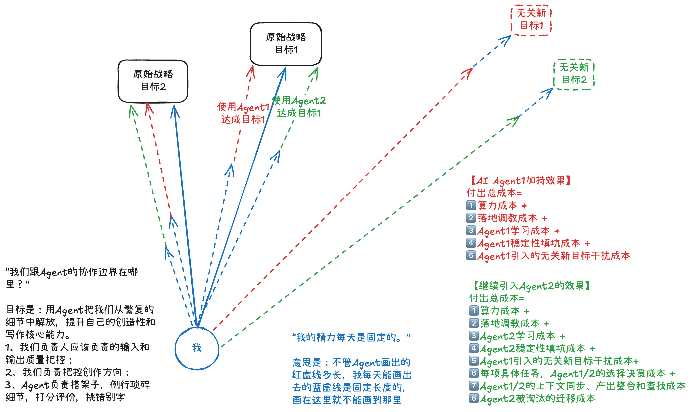

在这个"全民拥抱 AI"的时代，很多人每天都在疯狂囤积各种大模型和 AI Agent（智能体），幻想着能从此解放双手。但现实往往是：工具装了一堆，时间没省下来，人反而更疲惫了。
为什么会这样？
上面这张手绘图，极其精准地戳破了当下"人机协作"的幻象，揭示了我们与 AI 协作时最容易踩的坑。
01 你的精力是守恒的，别产生"无限杠杆"的错觉
图中最核心的一句话是："我的精力每天是固定的。"
图中的蓝色实线代表我们每天有限的精力。很多人在使用 Agent 时，会产生一种错觉，以为 AI 画出的虚线有多长，自己的产出就能有多大。但真相是：不管 Agent 能跑多远，你每天能画出去的"蓝色实线"（你的心智带宽）是固定长度的。 你把精力花在左边，右边就顾不上。如果你每天把大量固定的精力，消耗在研究新工具、写复杂的 Prompt（提示词）、纠正 AI 的胡言乱语上，那你留给"原始战略目标"的精力就被严重稀释了。
02 看不见的"账单"：AI Agent 的隐形成本
很多人只看到了 AI 生成文章只需 10 秒，却忽略了背后的隐形成本。图中右侧的"加持效果"清单，给我们算了一笔非常清醒的账。
当我们引入第一个 Agent 时，付出的总成本不仅是算力，还包括：
落地调教与学习成本： 你得花时间去熟悉它的脾气。
稳定性填坑成本： AI 随时会产生幻觉，你得去核实、去修改。
无关新目标的干扰： 这是最致命的一点！AI 经常会发散出看似酷炫但与核心任务无关的"副产品"（图中的红框/绿框）。为了追逐这些虚假的繁荣，我们偏离了原始目标。
当我们贪多嚼不烂，引入 Agent 2 甚至更多时，灾难就来了：
你不仅要承受双倍的上述成本，还会增加"决策成本"（这个任务到底给哪个 AI 做？）、"上下文同步成本"（把 A 生成的结果喂给 B，格式全乱了），以及工具被淘汰时的"迁移成本"。
最终，你从一个创造者，沦为了几个不靠谱 AI 的"保姆"。
03 重新划定边界：把 AI 当打工人，你自己要当老板
那么，我们该如何真正利用 AI 提升核心能力？图左侧的文字给出了人机协作的黄金准则：明确协作边界。
目标永远只有一个：用 Agent 把我们从繁复的细节中解放，提升自己的创造性。
明确分工如下：
AI Agent 负责"苦力活"： 搭建文章骨架、处理例行琐碎细节、做数据的基础评价、挑错别字、润色排版。
你（我）负责"掌舵"： 把控创作的大方向，把控输入和输出的绝对质量。
不要让 AI 替你做战略决策，也不要为了迎合 AI 的能力去修改你的原始目标。
写在最后
工具的强大，不等于使用者的强大。真正的高手，往往只用最顺手的一两个 AI 工具，把它们用到极致，然后把省下来的全部精力，倾注在"原始战略目标"上。
丢掉那些让你陷入"调参内耗"的冗余工具吧。每天问自己一遍：今天我的蓝色实线，是指向了我的战略目标，还是浪费在了给 AI 填坑上？
看完这张图，你打算删掉手机或电脑里的哪些冗余 AI 工具？欢迎在评论区聊聊你的感受。